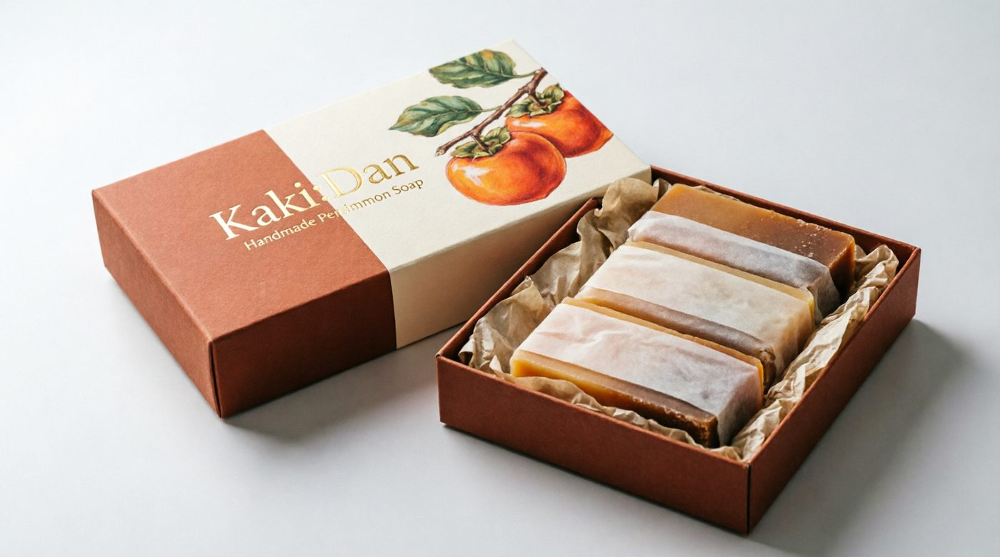

Kaki:Dan is a persimmon-tannin soap, handmade to gently reduce the buildup that causes age-related body odour — given as a beautifully wrapped gift, not a hint.

She isn't imagining it. And you aren't wrong to have noticed.
Past a certain age, skin starts producing more of a compound called 2-nonenal — an oxidised fatty acid that regular soap barely touches. It's not about hygiene. It's biology, and it shows up whether someone showers once a day or three times.
Most families handle it the way they handle most awkward things about ageing parents: by not mentioning it. Kaki:Dan gives you a better option — a genuinely lovely gift that happens to do exactly what needs doing, so nobody has to bring it up at all.
The bar does the talking. You just have to choose to send it.
Unripe persimmon — kaki in Japanese — has been pressed into tannin for over a thousand years, used across East Asia to deodorise, preserve, and treat fabric and paper. We put it back on skin, where it started.
Persimmon tannin chemically binds to odour-causing compounds like 2-nonenal rather than perfuming over them — so there's nothing to wear off by evening.
Cold-processed with olive and rice bran oil, each bar is low-lather and low-strip — suited to the thinner, more reactive skin common in later life.
Every batch cures for six weeks before it's wrapped. Nothing here is engineered to work in one wash — it's designed to work over a lifetime of them.
Every Kaki:Dan gift box carries the same starter set of four — one deep, three gentler — so a parent can find their own favourite without you having to guess.
"I didn't know how to bring it up with Mum, so I didn't. I just left the box in the bathroom. Three weeks later she asked where I'd bought it."
"Dad's not a soap person. He is now, mostly because it doesn't look like a hint — it looks like something you'd actually choose for yourself."
"We've sent two boxes now. It's become the thing we give instead of flowers when we visit — nobody has to say why."
Not from the box. It's designed and packaged as a genuine gift-shop item — botanical illustration, foil wordmark, no clinical language anywhere on the outside. The card inside simply says "handmade persimmon soap." What it does is between you and the bar.
Yes. Ordinary soap cleans the skin's surface but doesn't do much to the oxidised fatty acids that cause age-related odour. Persimmon tannin binds to those compounds directly, which is why the effect holds up between washes rather than needing to be reapplied like a fragrance.
Each bar is cold-processed with olive and rice bran oil, has no added fragrance beyond its natural ingredients, and is patch-tested. As with any new product on sensitive or broken skin, we'd suggest trying a small area first and checking with a GP if there's an existing skin condition.
Four full-size bars, roughly 6–8 weeks of daily use for one person, longer if rotated between two.
Not yet — currently Sydney-made and Australia-wide only, arriving in 3 business days for metro areas.